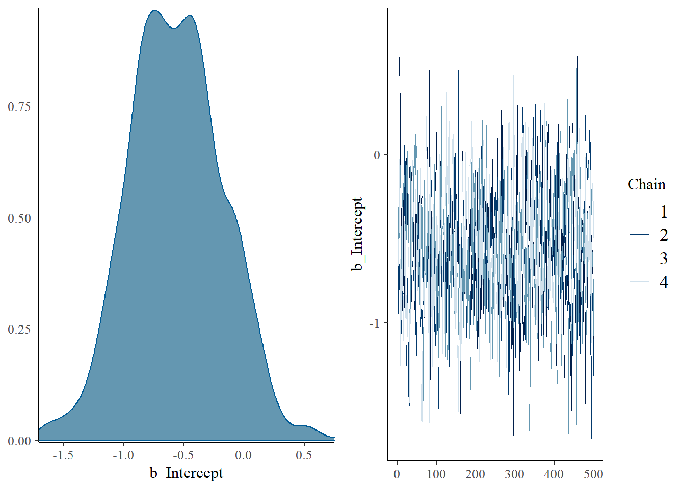
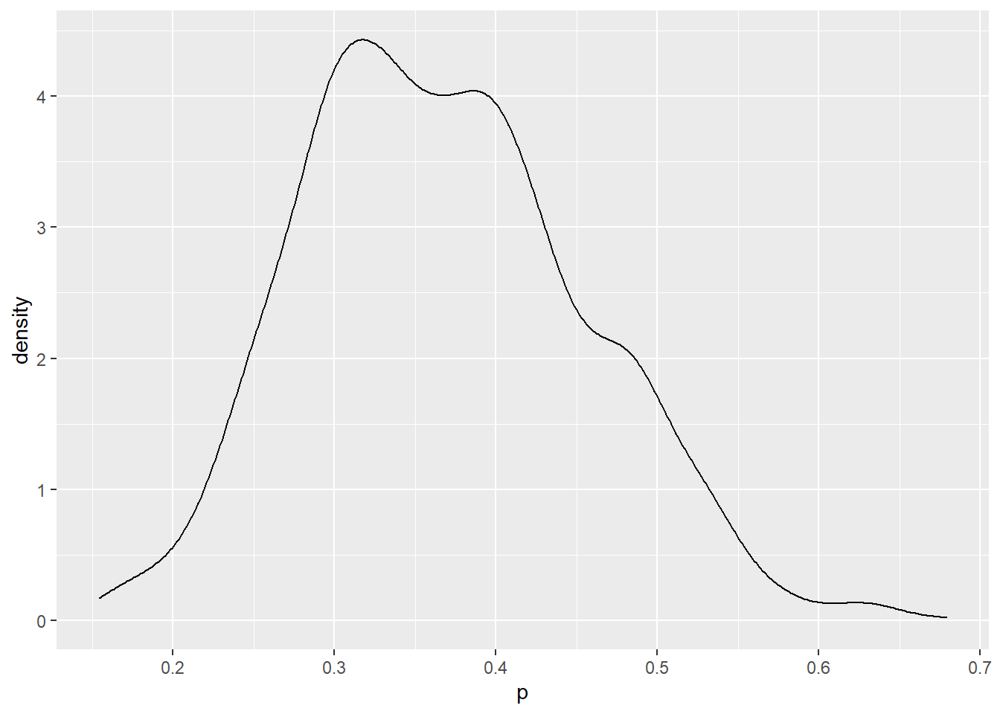

v ggplot2 3.3.6 v purrr 0.3.4
v tibble 3.1.7 v dplyr 1.0.9
v tidyr 1.2.0 v stringr 1.4.0
v readr 2.1.2 v forcats 0.5.1
Warning: package 'ggplot2' was built under R version 4.1.3
Warning: package 'tibble' was built under R version 4.1.3
Warning: package 'tidyr' was built under R version 4.1.3
Warning: package 'readr' was built under R version 4.1.3
Warning: package 'dplyr' was built under R version 4.1.3
-- Conflicts ------------------------------------------ tidyverse_conflicts() --
x dplyr::filter() masks stats::filter()
x dplyr::lag() masks stats::lag()
library(brms)
Warning: package 'brms' was built under R version 4.1.3
Loading required package: Rcpp
Warning: package 'Rcpp' was built under R version 4.1.3
Loading 'brms' package (version 2.17.0). Useful instructions
can be found by typing help('brms'). A more detailed introduction
to the package is available through vignette('brms_overview').
Attaching package: 'brms'
The following object is masked from 'package:stats':
ar
library(bayesplot)
Warning: package 'bayesplot' was built under R version 4.1.3
This is bayesplot version 1.9.0
- Online documentation and vignettes at mc-stan.org/bayesplot
- bayesplot theme set to bayesplot::theme_default()
* Does _not_ affect other ggplot2 plots
* See ?bayesplot_theme_set for details on theme setting
library(ProbBayes)
Warning: package 'ProbBayes' was built under R version 4.1.3
Loading required package: LearnBayes
Attaching package: 'LearnBayes'
The following object is masked from 'package:brms':
rdirichlet
Loading required package: gridExtra
Attaching package: 'gridExtra'
The following object is masked from 'package:dplyr':
combine
Loading required package: shiny
Warning: package 'shiny' was built under R version 4.1.3
3.1 Voorbeeld
Stel dat een sample van \(n=20\) collegestudenten is gevraagd of zij van plan zijn een masker te dragen bij het volgen van een les. Laat \(p\) de proportie zijn van alle studenten die van plan zijn maskers te dragen.
3.1.1 Prior voor proportie
Stel dat je gelooft dat \(p=0.40\) is en dat je er 90% zeker van bent dat \(p<0.60\).
Gebruik beta.select() van het ProbBayes-pakket om de parameters vast te stellen die matchen met de beta-curve prior.
beta.select(list(x =0.4, p =0.5),list(x =0.6, p =0.9))
[1] 4.31 6.30
Een beta-prior van (4.31, 6.30) representeert iemand geloof in de proportie \(p\).
3.1.2 Prior voor de logit parameter
Omdat we het model in termen van een logit functie willen schrijven
\[\theta=log\frac{p}{1-p}\]
willen we een corresponderende normaal prior op \(\theta\) vinden.
Dit kan op een eenvoudige manier door een simulatie …
Simuleer 1000 trekkingen van de beta prior op \(p\).
Computeer \(\theta\) op deze gesimuleerde trekkingen van \(p\).
Vind het sample gemiddelde en standaard deviatie van deze trekkingen – dit zijn schattingen van het gemiddelde en standaard deviatie van de normaal prior op \(\theta\).
De prior op de logit parameter \(\theta\) wordt verondersteld normaal te zijn met een gemiddelde van −0.400 en standaard deviatie van 0.654.
3.1.3 Fitten van het model
Het model is \(y_1,...,y_20\), een random sample van een Bernoulli distributie met waarschijnlijkheid \(p\) waarbij \(p\) logistische representatie heeft.
\[log(\frac{p}{1-p}=\theta)\] waar \(\theta \tilde N(-0.400,0.654)\)
We zetten twintig binaire antwoorden in een dataframe.
We gebruiken de brm() functie van het brms pakket om het model te fitten.
fit <-brm(data = bdata, family = bernoulli, y ~0+ Intercept,prior =c(prior(normal(-0.400, 0.654), coef = Intercept)),iter =1000,refresh =0)
Compiling Stan program...
Start sampling
De plot() functie laat een densityplot zien en een traceplot van het intercept \(\theta\).
plot(fit)

De summary functie biedt samenvattende statistieken voor \(\theta\).
summary(fit)
Family: bernoulli
Links: mu = logit
Formula: y ~ 0 + Intercept
Data: bdata (Number of observations: 20)
Draws: 4 chains, each with iter = 1000; warmup = 500; thin = 1;
total post-warmup draws = 2000
Population-Level Effects:
Estimate Est.Error l-95% CI u-95% CI Rhat Bulk_ESS Tail_ESS
Intercept -0.56 0.39 -1.29 0.17 1.01 683 1111
Draws were sampled using sampling(NUTS). For each parameter, Bulk_ESS
and Tail_ESS are effective sample size measures, and Rhat is the potential
scale reduction factor on split chains (at convergence, Rhat = 1).
De posterior_samples() functie biedt ons de gesimuleerde trekkingen van \(\theta\).
post <-posterior_samples(fit)
Warning: Method 'posterior_samples' is deprecated. Please see ?as_draws for
recommended alternatives.
Om een sample trekkingen te krijgen van de posterior distributie van \(p\), kan men de inverse logit transformatie gebruiken op de gesimuleerde trekkingen van \(\theta\).
\[p=\frac{exp(\theta)}{1+exp(\theta)}\]
post %>%mutate(p =exp(b_Intercept) / (1+exp(b_Intercept))) -> post
De posterior dichtheid voor \(p\) wordt gevonden door een dichtheidsplot te construeren van de gesimuleerde trekkingen van \(p\).
ggplot(post, aes(p)) +geom_density()

Een 90% posterior interval schatting kan gevonden worden door quantielen te definiëren van de gesimuleerde waarden van \(p\).